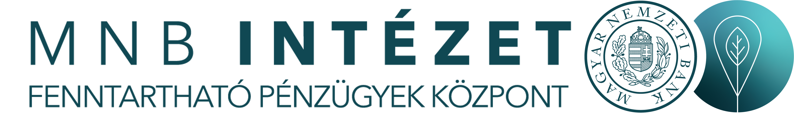
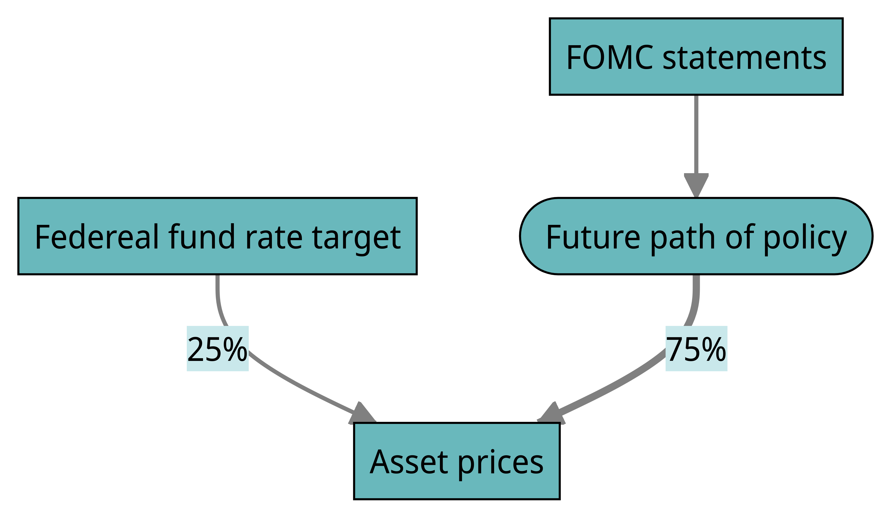
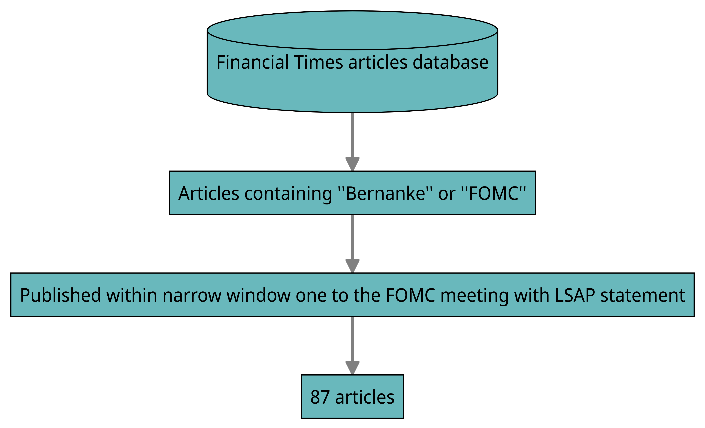

“Market sentiment shifted with concerns over rising inflation, causing uncertainty and apprehension among traders. This news triggered a sell-off in certain sectors, with investors adopting a cautious approach. Amid this backdrop, the market exhibited volatility, reflecting the emotional rollercoaster of market participants. Sentiment plays a crucial role in determining market direction, as investors feelings and emotions can sway their investment decisions. Stay tuned for updates on how sentiment continues to impact the stock market.”
The Power of Words
Quantitative text mining tools
Marcell Granát | Education & Research Expert at

2023
Are the words important?
The Influence of Stories

The Influence of Stories
George Akerlof and Robert Shiller (2010) highlighted in their classic book “Animal Spirits” that one of the most important factors driving markets are the stories of the given “era”. The value of the stock market and our assets are not only explained by our stories, but the stories are shaping the markets.
The Influence of Stories
“The Internet was indeed an important new technology. This new technology was especially salient because of its presence in our daily lives. All of us use the Internet. It is on our desktops, at our fingertips. The stories ofyoung people making fortunes were a contemporary reenactment of the nineteenth-century Gold Rush. The steady progress of technology, which has dominated economic growth for centuries-consisting of millions of incremental advances in areas like materials science, chemistry, mechanical engineering, and agricultural science-has never attracted the public’s interest. These stories arc not popular. There are few statistics in People magazine. But with the Internet, the economy literally got carried away with the story.” — Akerlof and Shiller (2010)
Federal Reserve Announcements
- The largest movements 🏃🏻 typically occur around Federal Reserve announcements 🗣️ (Gurkaynak, Sack, and Swanson 2004).

Federal Reserve Announcements
Large-scale asset purchases news 📰 has economically large🗽 and highly significant effects on asset prices (Rosa 2012).
Cumulative financial market impact of the Fed’s LSAP program is equivalent to an unanticipated cut in the federal funds target rate 😯.
Federal Reserve Announcements
Large-scale asset purchases news has economically large🗽 and highly significant effects on asset prices (Rosa 2012).
Cumulative financial market impact of the Fed’s LSAP program is equivalent to an unanticipated cut in the federal funds target rate 😯.
Control for the surprise component

The Influence of Stories ➡️ NLP
Stories circulate among individuals in the economy in a manner similar to the spread of viruses. Just as public health experts utilize mathematical models to predict the trajectory of an epidemic, there is an opportunity to employ such models in this context as well.
- Our data analysis tools undergo continuous development.
- Expansion of information technology.
- Constant pushing of computational capacities.
The Influence of Stories ➡️ NLP
- Our data analysis tools undergo continuous development.
- Expansion of information technology.
- Constant pushing of computational capacities.
- Important new elements in the analytical toolbox are text mining and natural language processing (NLP) techniques.
- Processing and interpretation of large quantities of data
- Making data interpretable (that was previously not possible)
The Influence of Stories ➡️ NLP
“I often say that when you can measure what you are speaking about, and express it in numbers, you know something about it; but when you cannot measure it, when you cannot express it in numbers, your knowledge is of a meagre and unsatisfactory kind; it may be the beginning of knowledge, but you have scarcely in your thoughts advanced to the stage of science, whatever the matter may be.” – Baron William Thomson Kelvin
Tools you need to know for text mining🧑💻
Sentiment Analysis 😏
- Sentiment analysis is the process of determining the sentiment (positive, negative, or neutral) in a given piece of text.
- It is widely used in text mining to understand the overall opinion or sentiment expressed by individuals or groups.
- The magnitude of the sentiment score can also indicate the intensity of the sentiment.
Sentiment Analysis 😏
An example
Sentiment Analysis 😏
The bing sentiment dictionary
tidytext::get_sentiments("bing")
#> # A tibble: 6,786 × 2
#> word sentiment
#> <chr> <chr>
#> 1 2-faces negative
#> 2 abnormal negative
#> 3 abolish negative
#> 4 abominable negative
#> 5 abominably negative
#> 6 abominate negative
#> 7 abomination negative
#> 8 abort negative
#> 9 aborted negative
#> 10 aborts negative
#> # ℹ 6,776 more rowsSentiment Analysis 😏
Identified words with bing sentiment dictionary
“Market sentiment shifted with concerns over rising inflation, causing uncertainty and apprehension among traders. This news triggered a sell-off in certain sectors, with investors adopting a cautious approach. Amid this backdrop, the market exhibited volatility, reflecting the emotional rollercoaster of market participants. Sentiment plays a crucial role in determining market direction, as investors feelings and emotions can sway their investment decisions. Stay tuned for updates on how sentiment continues to impact the stock market.”
Sentiment Analysis 😏
Choice of dictionary
It’s essential to choose the right dictionary for accurate sentiment analysis. Consider the coverage, context, and accuracy of the dictionary to ensure reliable results.
Some popular dictionaries (All available in the {tidytext} R package.):
-
AFINN: A popular English-language dictionary that assigns sentiment scores ranging from -5 to 5. -
Bing: Developed by Microsoft, it classifies words as positive or negative. -
NRC: An extensive emotion lexicon that assigns sentiments based on eight different emotions.
Sentiment Analysis 😏
Choice of dictionary
It’s essential to choose the right dictionary for accurate sentiment analysis. Consider the coverage, context, and accuracy of the dictionary to ensure reliable results.
In certain contexts, the meaning of certain words can vary from the typical one. For instance, conventional dictionaries classify “increase” with a positive sentiment, but in news related to COVID-19 infection, it is probable not appropriate. This is why scholars frequently apply thematic dictionaries to their analytics.
Method Overview (basic)
- Split the text into individual words.
- Assign a sentiment score to each word.
- Each word is assigned a sentiment score based on a pre-defined sentiment lexicon or dictionary.
- The sentiment lexicon contains a list of words along with their associated sentiment scores.
- For example, positive words 👍 may have a score of +1, negative words 👎 may have a score of -1, and neutral words 😐 may have a score of 0.
- Calculate the overall sentiment score (\(\sum\)) for the text.
Topic modelling
Topic modeling is a technique used in natural language processing and text mining to automatically discover topics or themes from a collection of documents. It helps in understanding the main ideas or concepts present in the text data.
Warning
This is an unsupervised machine learning tool, thus it does not have a target (outcome) ⛳ variable to assess its modeling effectiveness. It is not always clear how many topics we should aim to identify 🤷♂️. We want to avoid that our model is overly complicated and messy, but we also don’t want important topics to be merged together ⚖️. As a result, there is always some subjective judgment 🧑⚖️ and need for fine-tuning (➡️ mostly time-consuming).
Latent Dirichlet Allocation (LDA)
LDA assumes that (1) each document is a mixture of a small number of topics, and (2) each topic is characterized by a distribution of words. The goal of LDA is to infer the topic mixture distribution and the word distribution for each topic.
Tip
One example is that the newspaper articles cover various subjects such as politics and economics. By utilizing topic modeling, we can assess the extent to which the articles focus on each topic and observe how these prevalences fluctuate over time.
Structural Topic Model (STM)
The motivation behind the STM is to provide a framework that incorporates document-level covariate information, which can improve the inference of topics. Unlike Latent Dirichlet Allocation, the STM allows researchers to incorporate additional information about the documents, such as time, journal title, author or contextual data.
Tip
This tool is relatively new, but it has gained popularity in the field of economics and finance research. You can find a recent publication from our institution is Csillag, Granát, and Neszveda (2022).
👓 Supervised text analysis
Supervised machine learning algorithms can be used to build predictive models that classify text into different categories or make predictions based on text inputs.

📎 Papers based on TA
Dybowski and Kempa (2020)
-
Demonstrated a shift in ECB’s communication after the 2007-08 crisis.
Instead of conventional monetary analyses, the stability of the financial system became the primary focus (
STM).The change was gradual but significant, with the prevalence of stability-related topics rising from approximately 20% before the crisis to 60-70% by 2017.
Dybowski and Kempa (2020)
-
Despite the shift towards financial stability in ECB’s communication, it is not evident that their statements necessarily reflect in their decisions.
Dybowski and Kempa (2020) analyzed not only the time series of topics’ prevalence but also constructed a
sentiment indexindicating the positivity or negativity towards financial stability.They integrated this sentiment index into an extended Taylor rule, but it did not affect the the interest decision significantly.
Pongsak, Luangaram and Warapong, Wongwachara (2017)
The authors analysed the communication of 22 central banks between 2000 and 2015
readability, topics, tones
Understanding MP communication generally required an advanced reader, but they improved a lot! (See also here: economania.hu)
IT central banks had generally communicated more about inflation topic than economic growth topic
Pongsak, Luangaram and Warapong, Wongwachara (2017)
| Topic | Top words |
|---|---|
| Inflation | remain, ressur, low, recent, moder, data, continu, rowth, inflationari, confirm |
| Labor market | increas, wage, product, growth, labour, employ, cost, result, adjust, unemploy |
| Domestic demand | growth, demand, domest, sector, household, continu, credit, invest, loan, rivat |
| Economic condition | econom, committe, condit, inform, support, time, improv, current, assess, radual |
| Oil prices | price, increas, Oil, consum, rise, food, commod, mainli, energi, declin |
| Risk outlook | risk, outlook, factor, current, effect, deveio, balanc, account, Chang, impact |
| Financial market | market, financi, exchang, intern, us, includ, dollar, rand, volatil, domest |
| Euro area | euro, area, fiscal, overn, countri, ublic, financ, need, measur, reform |
| Inflation | inflat, expect, target, rang, remain, measur, cpi, core, within, end |
| Output growth | declin, indic, trend, output, growth, show, posit, real, although, improv |
| Global economy | economi, econom, growth, global, activ, recoveri, export, emer, world, state |
| Monetary policy | rate, interest, annual, basi, point, decid, unchang, deposit, key, today |
| Inflation | term, medium, remain, stabil, develop, expect, continu, close, council, time |
| Monetary policy | olici, monetari, bank, board, maintain, meet, central, oper, stanc, overnight |
| Growth projection | project, lower, previou, last, forecast, period, higher, compar, gdp, averag |
| Source: Luangaram & Wongwachara (2017) | |
Pongsak, Luangaram and Warapong, Wongwachara (2017)
The authors analysed the communication of 22 central banks between 2000 and 2015
readability, topics, tones
Understanding MP communication generally required an advanced reader, but they improved a lot! (See also here: economania.hu)
IT central banks had generally communicated more about inflation topic than economic growth topic
Central bank communication complements well with the policy interest rate in enhancing the effectiveness of monetary transmission mechanism (
VAR)
Parle (2022)
Parle (2022) presents two methods of measuring the economic sentiment of the ECB press conferences, called Hawk–Dove Indices.
. . .
Hawkish: Positive expectations regarding economic conditions or higher inflation pressure, and hence a tendency towards a monetary policy tightening.
Dovish: Negative expectations regarding economic conditions or lower inflation pressure, and hence a tendency towards a monetary policy loosening
. . .
Dictionary based index, with 4 categories (economic terms and sentiment)Dynamic Topic Model
Parle (2022)
Parle (2022) applies the Hawk–Dove Indices and intraday financial market indeces to identify the importance of the “information channel” and the the effect on the expectations about the future monetary policy.
Unintended consequences: The paper highlights that the market reacts negatively to a dovish statement, which are set for stimulating the economy.
What should you expect?
Pros 🥰
- Text mining is a relatively new 🆕 research method that has gained popularity in recent years. It has a great potential 👊🏻 to make valuable contributions to various topics in finance 💰 and economics 📈.
Cons 🤕
At times, it can be challenging to find 🔍 a sufficient amount of textual data that aligns with your research question.
Cleaning 🧹 and preprocessing tasks require programming ⌨️ expertise 🧐 due to the possibility of numerous emerging issues (often computationally intensive that requiring optimization) and that there is no one-size-fits-all solution 🤷♂️.
Thank you for your attention! 👋
And others also liked 📖

@Marcell Granat
Akerlof, George A, and Robert J Shiller. 2010. Animal Spirits: How Human Psychology Drives the Economy, and Why It Matters for Global Capitalism. Princeton university press.
Csillag, J. Balázs, P. Marcell Granát, and Gábor Neszveda. 2022. “Media Attention to Environmental Issues and ESG Investing.” Financial and Economic Review 21 (4): 129–49. https://doi.org/10.33893/FER.21.4.129.
Dybowski, T. Philipp, and Bernd Kempa. 2020. “The European Central Bank’s Monetary Pillar After the Financial Crisis.” Journal of Banking & Finance 121 (December): 105965. https://doi.org/10.1016/j.jbankfin.2020.105965.
Gurkaynak, Refet S., Brian P. Sack, and Eric T. Swanson. 2004. “Do Actions Speak Louder Than Words? The Response of Asset Prices to Monetary Policy Actions and Statements.” SSRN Electronic Journal. https://doi.org/10.2139/ssrn.633281.
Hvitfeldt, Emil, and Julia Silge. 2021. Supervised Machine Learning for Text Analysis in r. CRC Press. https://smltar.com.
Parle, Conor. 2022. “The Financial Market Impact of ECB Monetary Policy Press Conferences — A Text Based Approach.” European Journal of Political Economy 74 (September): 102230. https://doi.org/10.1016/j.ejpoleco.2022.102230.
Pongsak, Luangaram, and Warapong, Wongwachara. 2017. “More Than Words: A Textual Analysis of Monetary Policy Communication.”
Rosa, Carlo. 2012. “How ’Unconventional’ Are Large-Scale Asset Purchases? The Impact of Monetary Policy on Asset Prices.” SSRN Electronic Journal. https://doi.org/10.2139/ssrn.2053640.